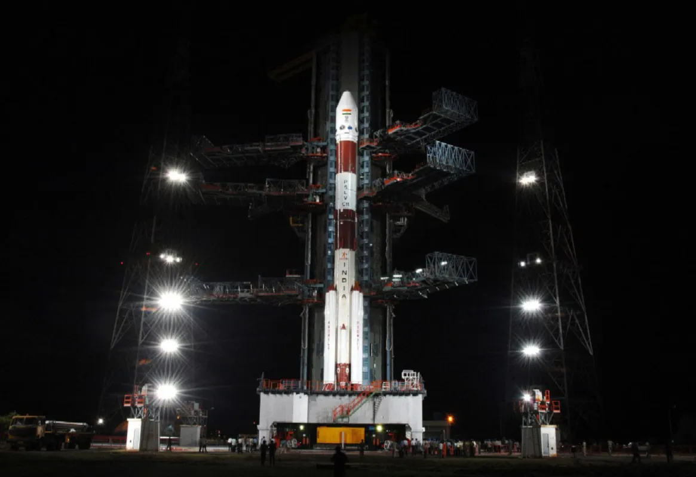
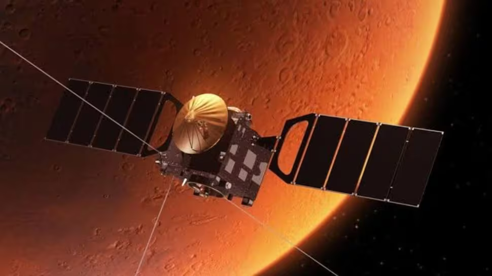

Famous Missions
Unveiling Legendary Missions That Shaped History
Throughout history, numerous missions have shaped our world,
pushing the boundaries of exploration, science, and innovation.
From space expeditions like Apollo 11, which landed humans on the
Moon

Chandrayaan-1
Launched on October 22, 2008, Chandrayaan-1 was India's first
lunar mission. It discovered water molecules in the lunar soil
and mapped the Moon's surface, contributing to global lunar
science.

Mangalyaan (MOM)
Launched on November 5, 2013, the Mars Orbiter Mission made
India the first Asian nation to reach Mars orbit on its first
attempt. It studied the Martian atmosphere and surface
features.
Chandrayaan-2
Launched on July 22, 2019, Chandrayaan-2 aimed to explore the
Moon's south pole. Although the lander failed to soft-land,
the orbiter continues to send valuable data about the lunar
surface.